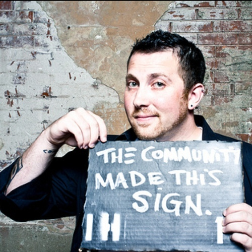

It all started when you made the decision, "I'm finally going to start a business." Perhaps you sat down to scribble down 100 business ideas at your kitchen table. Maybe you stared blankly at a page, frustration mounting, as you couldn't get a single idea out of your head.
What happens when you pick an idea, and then invest all of the time into building and launching it? Even an MVP is going to take some serious effort. And then your biggest fear takes over. Your hopes of launching to Techcrunch trumpets and fanfare are dashed by the sound of - *chirp chirp* - crickets.
"Where are all of those people who said this was a great business idea?
Why isn't anybody buying?"
Is this it? A premature demise for your product biz?
If you're lucky, you might have scored a dismal couple of sales at launch. But now, your sales funnel is more like a sales dribble. You're starting to doubt if the decision to start a business was a good decision after all.
But it's exhausting to even consider the alternatives - starting all over again from scratch without knowing how to avoid making the same mistakes, or going back to get a j-o-b. Ugh.
But what if you could read your potential customers' minds?
It sounds like a silly superpower...but really. What if you could know - not guess but actually know - what people need, what they want, and what they're ready to buy?
You'd never have to wonder, "is this a good idea?" or "are people going to want it enough to pay for it?" Your time is precious, so peeking inside your customers' brains would let you make sure that you're working on something they'll actually buy.
Pain, heartache, and an empty bank account: successfully averted.
Even though you're a designer or developer and not an expert copywriter, you'd be able to write sales pages that get your customers salivating for your products, literally throwing their credit cards at their screen saying: "SHUT UP AND TAKE MY MONEY!"
And you can forget about paying for advertising, or giving up a whopping 30% chunk of your revenue to promises of a "marketplace". You'd be able to build your own audience, one full of people that trust you, people that will return for follow-up sales, and people who will recommend you to their friends.
Good news. You don't need to be a mind reader. You just need to attend a 30x500 Bootcamp.
Unlike previous 30×500 classes, which have run for months on end (and, frankly, been quite a bit saggy)...
The new 30×500 Bootcamp is tautly designed for self-starters and self-finishers who simply need a way to figure out A) what people need, want, and are ready to buy and B) how to reach and persuade those people.
"I've struggled with 'what's my next idea' and 'can I make money with it?' I realize now that's the wrong way to look at it."
- Lee Atchinson, August 2013 Bootcamp Attendee
"We didn't leave the workshop with just knowledge in our heads.
Amy and Alex helped us actively try everything ourselves."
- Will Schmidt, August 2013 Bootcamp Attendee
Going through the 30x500 videos again for the homework. Not one wasted second. @alexknowshtml and @amyhoy deliver the goods!
— Matthew Lehner (@matthewpearse) June 30, 2013
The Details at a Glance
The 30x500 Bootcamp packs a punch, filling a two-day schedule with lessons, exercises, and interactive coaching.
- Location: 100% online, via pre-recorded video lessons and interactive text chat. You can participate from anywhere you have a good internet connection, in your jammies if you want!
- Dates: Thursday April 17th and Friday April 18th.
- Timing: Both days run from 10am-5pm EST (check your time zones here)
- Breaks & Meals: Both days will include a one hour "meal" break around 12pm EST, and plenty of 15 minute breaks between lessons to refresh your brain, reheat your coffee, grab a snack, etc.
We’ve listed in detail what you’ll learn and, more importantly, what you'll practice, lower down the page. But if you’re more of a visual person, this "roadmap" that we put together will give you an even better sense of how the two days of 30×500 Bootcamp will unfold. You can click on it to zoom in!

What you'll learn in just 2 days
We're not joking when we say that the Bootcamp packs a punch. Day one will start off with teaching you:
- about the hungry bear that’s trying to eat you...
- ...and how to use the bear to help you make the right choices
- the 3 “natural” ways of selling and why they absolutely don’t work
- how to dissect a product sales pitch/landing page
- how to do a Sales Safari, and what good Sales Safari data gives you (hint: answers to eeeeverything)
- how a good pitch serves as a template for your customers, your product, AND your marketing
- how to find the hidden and not-so-hidden product concept gold in public conversations
- the simple formula you can use to write a persuasive pitch
- how to gather, design, and brainstorm the elements for your pitch
- how to use your Safari data, the pitch-writing recipe, and the product-type framework to come up with infinite product "ideas"
- how you can use a single pitch to come up with unlimited, targeted, AWESOME marketing content
- how to write pitch after pitch after pitch, even when you have writer’s block
- how to use a simple pitch to set the path of a product development... and marketing… and in-person conversations...
- and how to build a platform of customers ready to buy, too.
The "lesson" portions of the Bootcamp come as pre-recorded videos for efficiency & to ensure the highest quality possible, and to make it possible to pause/rewind and rewatch. Video lessons also free up Alex and Amy to be in the chat room answering questions.
But our focus isn’t just on information...it’s on practice.
Hands on exercises will give you experience with:
- designing a sales strategy
- targeting an audience in copy
- dissecting a product sales pitch/landing page
- spotting functional vs dysfunctional sales tactics
- extracting valuable pain points from public conversations
- grabbing your reader’s attention with pain
- ratcheting up your reader’s desire by painting a picture of a better world
- conquering the urge to ‘stick’ with the first solution… instead, generate many solutions
- generating product concept after product concept... direct from research, instead of waiting for a "stroke of genius"
With each exercise, you’ll be able to compare your work with your instructors' expert answers, and nearly every exercise will include hands-on coaching for even deeper learning.
By the end of day one, you'll see how personal creativity, stroke of genius, the million-dollar idea that pops into your head in the shower… these are things you can’t control. That’s why they’re poor damn things to try to base a business on.
Our process of Sales Safari is the opposite of all of those: it’s systematic, under control, available to you at any time. Get good data, and you can find out...
- what people need / want
- what they’ll pay for
- what they value, desire, believe, say, read, share
(Some of which you’ll focus on in Day 2.)
And you can use that data to come up with infinite product ideas to serve them. And you can use that data to write powerful, attention-grabbing pitches that earn people’s trust and ultimately have them giving you their names, email addresses, and even money. And then you can use that same data to write helpful marketing content that your audience will want to share for you, to bring more people into your circle, to read your pitch, and buy your product.
It’s worth noting: This can seem like a somewhat slow process, and in practice it does take time. Persistence is virtue, but unlike spending time on "validation", or waiting (and wishing and hoping) for genius to strike, it works every time.
On Day 2, you learn the core skills you’ll need to put together to take bigger steps towards building and selling your product.
(You’ll notice the sentences are longer in these bulleted lists. There’s a reason for that: on Day 2, you’ll start taking those bigger steps!)
- how companies of every kind are using the ebomb (educational content marketing) strategy with great success
- all the different types of ebombs you can use
- why you might strategically pick one type of ebomb over another
- the kinds of results you can achieve, based on real-life ebomb results
- how ebombs are truly the most Minimum of Viable Products
- ...and how they help you create products, as well as build an audience
- how to take off your blinders (even if you don’t think you have them on), and get out of a product / ebomb / marketing rut, by analyzing keywords & themes
- how to learn the audience’s language so you can speak it with them, for maximum impact
- how to learn from the audience how to serve them best (on top of everything else!)
- how to use the pitch to begin to scope a product… and how to manage scope by pruning the pitch
- why we recommend the path of pitch -> ebomb -> infoproduct -> other products / bigger products (e.g. "Tiny Product First" & Stacking the Bricks), and how…
Day two exercises & practice will give you experience with:
- brainstorming ebomb topics, from yesterday’s Safari data + pitches
- strategizing ebomb types, sequence for results
- getting a handle on the big picture: extracting keywords & themes that your audience thinks about, worries about, dreams about
- getting deeper & more accurate with audience pain extraction
- round 2: brainstorming ebomb topics, practicing so you can do it infinitely
- round 2: writing pitches, enhancing your pitch in detail, depth, language, etc.
- pruning a pitch (as a scope-setting tool) to a product you can create, launch, & profit from sooner
- brainstorming a marketing strategy from the destination: work backwards from a “Big Product” pitch to a set of ebombs and Tiny Products that build up to it
By the end of the second day, you'll realize how many business failures are the result of people just letting business happen to them...and then they wonder what's wrong when things don't happen the way they expected it would go.
But that’s not the only way to approach building a business. Everything can be strategic.
You’ll start to see how the “boring” Sales Safari process gives you data you can use to build that strategy, and make it possible to be strategic every time you sit down to execute on building and marketing your product.
Most people think marketing is just of telling potential customers about your product and it’s benefits, which isn't a terribly effective way of getting peoples' attention.
Instead, you’ll use a pitch that talks about what your customers care about the most – THEMSELVES.
Pitches get people listening, but attention doesn’t translate directly to sales. Rather than sitting around and waiting for sales (and never knowing why some people buy and others don’t), you’ll start to systematically build trust with the audience using ebombs (educational content marketing) so that by the time you’ve got something for sale, you’ve already earned it.
And remember – this is all a system, so you’ll be able to do it ALL on demand: come up with infinite product ideas that SELL on launch day and beyond, get customers attention with infinite killer pitches, and write infinite ebombs to keep earning their trust.
"I really like that the videos are available to watch over and over. They're ridiculously valuable and each time I've watched them again I feel like I pick up on something new. (I'm through most of them for the 3rd time)."
"I'm at $26,238 in revenue since I started my business.
Not bad for 8 months of work...in my free time."
- Brandon Savage, 30x500 "extended edition" alumni
Okay, I want in. How much does the Bootcamp cost?
When you attend the Bootcamp, you leave with:
- the video lessons
- the transcripts from the all-day chats, with you, your fellow students, and Alex and Amy
- the exercises you completed… our teacher’s examples to compare with…
- a set of checklists, frameworks, and to-do list for your next steps post-class (the last one prepared by you, with our help!)
For both days, including 6 hours of exercises/teacher feedback, and all of the above goodies, your tuition is just $1,650.
...add a Bootcamp Booster Pack
Want a little more hand-holding and follow-up? You can upgrade your Bootcamp experience with a booster pack: an OPTIONAL 2 hour “Office Hours” session with Alex and Amy, and a few of your fellow students, one week after Bootcamp on Monday, April 21st at 3pm eastern.
You can choose to add this follow-up Q&A when you register for just $300 more.
BUT THAT’S NOT ALL! Haha. Sorry for the cheesy cliché, but we’re offering a really good deal on a lil upgrade package:
- a follow-up Q&A with us, one week after the event (2 hours) in case you want a little extra support, AND
- the videos, transcript, (real) sample launch sequences, and report from our Product Launch Roundtable all about successful product launch sequences.
Not too long ago, we co-hosted hosted the Product Launch Roundtable with a handful of successful 30×500 alumni. This 3 hour conversation focused on successful launch sequences – another part of the system for putting together pitches, ebombs, and ultimately having killer product launches over and over and over.
If you sign up for the bootcamp booster pack, we’ll send you the 3 hour video recordings, materials packet that includes actual ebombs and launch emails used to make $30,000+ worth of sales, and the chat room transcripts including guest comments from Patrick McKenzie a.k.a. Patio11 of Bingo Card Creator and Appointment Reminder fame.
"I'm only 1 hour in to the roundtable video & transcripts, and there are so many insights on packaging, the wild importance of an email list, non-sexy markets, warm sales leads and consulting, and long-term revenue."
- Chris L, August 2013 Bootcamp Attendee
For just $300 extra, you’ll get both the above goodies. Total: $1,950.
You’ll be able to choose to add this booster pack during when you register for the bootcamp.
Highly recommended: 4-week Exercise Program! In addition to the above booster pack, you can now get extra help: you can upgrade for 4 weeks of tailored exercises designed to help you start implementing the 30x500 processes in your fledgling baby biz, and four weeks of live Office Hours/support, one 2-hour, no-holds-barred live chat each week. (Chats will be Monday afternoons 3-5pm, US eastern time zone!)
Pricing and details will be in your inbox after you apply :) (see below!)
The next bootcamp is April 17 & 18th. Wanna be there?
We'll be opening up the application process in mid-March. Why are we doing applications this time?
It'd be a whole lot easier for us to just take everybody's money, but we're invested in our students' success. If we don't think we can help you, we'd rather figure that out BEFORE you spend a bunch of your time and money.
In this application, we'll ask you a bit about your skills and goals. Don't worry, nothing too hard, and nothing too personal.
When you join our launch list, you get a bunch of free goodies... AND priority access to the application process. Based on demand, we expect this 30x500 to sell out, so you definitely don't want to be on the outside looking in!
Just so you know, you've read almost ALL the way to the end of this page. Before you go...how about some free knowledge for your brain?
After all, who doesn't love free stuff...especially knowledge.
Here's a few hand-picked articles from Amy to get the brain-juices flowing while you're waiting:
- How do you create a product that people want to buy?
- Why you should do a tiny product first.
- The difference between "payers" and "non-payers"
- How I increased conversion 2.4x...by writing different copy
I still have a question!
No worries. Is it one of these frequently asked questions?
Q: I’m going to need to miss part of the Bootcamp. Will it be recorded?
A: It’s not that kind of class. The lessons themselves (short 10 minute videos) are all pre-recorded so they can be as succinct and topical as possible.
The real lure of the Bootcamp is more than 6 hours of live practice / review time with us… plus we can answer questions WHILE the few video lessons are playing.
Q: HOW exactly will this Bootcamp work?
A: Did you read the description above? If you did and still have a question, drop us a line!
Q: WHEN exactly do I need to be available to attend the bootcamp?
A: You need to be available from 10 am-5 pm EST (check your time zone!) on both days, Thursday April 17th and Friday April 18th.
Q: WHERE will the bootcamp take place?
A: 100% online! You just need a computer with a fast internet connection and a modern browser. You won’t be on camera, so you don’t even need to get pretty (though we’re sure you’re naturally beautiful).
Q: I’m not a designer or a developer. Can I take the 30×500 bootcamp?
A: This time around… no, sorry! We’re hoping to change that in the future though! We need to keep focus tight so we can teach our students in the most effective way.
Q: Will this bootcamp have an alumni group or a way to follow up?
A: Nothing formal (besides the optional booster pack office hours), but you’re welcome (and encouraged!) to stay in touch with your fellow Bootcampers on your own.
Q: Can I use this with xyz idea I had to find ‘validation’?
A: Nope. That’s backwards. The 30×500 process won’t help you ‘validate’ your idea — that’s a technique for the land of wishin’ and hopin’ and we don’t teach that here. HOWEVER, if you already have a product THAT’S ALREADY MAKING SALES, the 30×500 bootcamp techniques can help you make MORE sales and grow your product empire further, by understanding your market even better, and marketing and selling more effectively.
Q: Do you offer payment plans?
A: No, sorry. Save your pennies for the next time we offer the bootcamp!
STILL have a questions? Shoot us an email, we're happy to answer.
Who is teaching this class anyway?
Oh, right. Who the heck are we that you should listen to us?
Amy Hoy
Amy Hoy quit her last (very cushy) job in 2007, opened up a consultancy for Fortune 100 companies, and then threw that all out the window to found a product biz... which she’d promised to do for years. Her empire includes Freckle, JavaScript Performance Rocks!, The JS Master Class, 30x500, the list goes on...
Alex Hillman
Alex Hillman is an international man of mystery. While he was still a freelance web developer, he founded Indy Hall, one of the world's first, largest, and longest running coworking spaces. Since, he's midwifed many products and businesses, teaches and consults with community and business leaders around the world, and of course co-teaches 30x500.